5.16 UML Modelling
The Unified Modeling Language (UML) is a general-purpose modeling language. The main aim of UML is to define a standard way to visualize how a system has been designed. It is quite similar to blueprints used in other fields of engineering. UML is not a programming language — it is a visual language.
UML is a standardized modeling language (approved by ISO) that provides a common way for teams to visualize and communicate system design. UML is closely linked to object-oriented design.
- We use UML diagrams to show the behavior and structure of a system.
- UML helps software engineers, businessmen, and system architects with modeling, design, and analysis.
- The International Organization for Standardization (ISO) published UML as an approved standard in 2005. UML has been revised over the years and is reviewed periodically.
- Example: In an e-commerce system, a UML diagram can show components like User, Product, and Order, and how they interact during processes like placing an order.
Need of UML
UML is essential for clearly visualizing and communicating system design among different stakeholders:
- Complex applications need collaboration and planning from multiple teams, so a clear and concise way of communication is required.
- Business stakeholders may not understand code, so UML helps explain system requirements, functionalities, and processes in a simple visual way.
- It saves time by allowing teams to visualize workflows, user interactions, and system structure before actual development.
- It bridges the gap between abstract requirements and concrete implementation.
Types of UML diagrams
UML is linked with object-oriented design and analysis. UML makes use of elements and forms associations between them to form diagrams. Diagrams in UML can be broadly classified as:
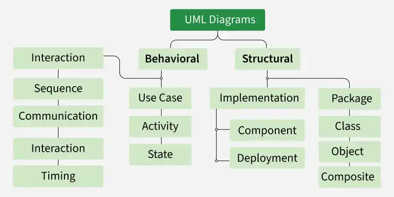
| Category | Diagram type | Purpose |
|---|---|---|
| Structural | Class diagram | Static structure — classes, attributes, methods, relationships |
| Composite structure diagram | Internal structure of a class — parts, ports, connectors | |
| Object diagram | Snapshot of object instances at a point in time | |
| Component diagram | Physical organisation of software components | |
| Deployment diagram | Hardware nodes and software deployment | |
| Package diagram | Organisation of packages and dependencies | |
| Behavioural | State machine diagram | Object states and transitions over time |
| Activity diagram | Workflow and control flow | |
| Use case diagram | System functionality and actor interactions | |
| Sequence diagram | Object interactions in chronological order | |
| Communication diagram | Object interactions emphasising links | |
| Interaction overview diagram | High-level overview of interaction flows | |
| Timing diagram | State changes over time (UML 2.0) |
1. Structural UML diagrams
Structural UML diagrams depict the static aspects of a system — classes, objects, components, and their relationships — providing a clear view of the system's architecture.
1.1 Class diagram
The most widely used UML diagram. It is the building block of all object-oriented software systems. Class diagrams depict the static structure by showing classes, their methods, attributes, and relationships between classes or objects.
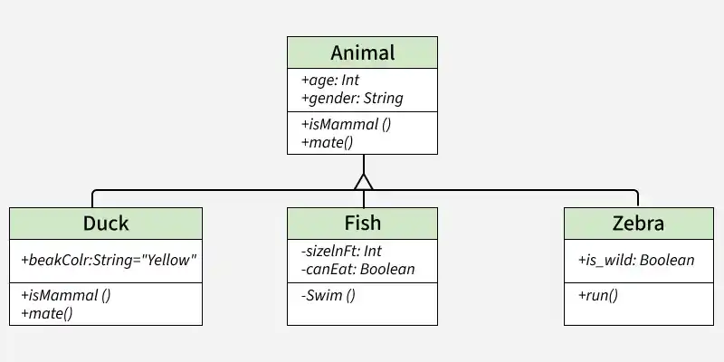
- Class: Rectangle divided into three compartments — class name, attributes, methods.
- Association: Line connecting two interacting classes — may show multiplicity (1, *, 1..n).
- Inheritance (generalisation): Hollow arrow from subclass to superclass — "is-a" relationship.
- Aggregation: Hollow diamond — "has-a" where parts can exist independently.
- Composition: Filled diamond — "part-of" where parts cannot exist without the whole.
1.2 Composite structure diagram
- Represents the internal structure of a class and its interaction points with other parts of the system.
- Shows the relationship between parts and their configuration, which determines how the classifier (class, component, or deployment node) behaves.
- Uses parts, ports, and connectors to represent internal structure.
- Similar to class diagrams but represents individual parts in detail rather than the entire class.
1.3 Object diagram
An object diagram can be referred to as a screenshot of the instances in a system and the relationships that exist between them at a particular point in time.
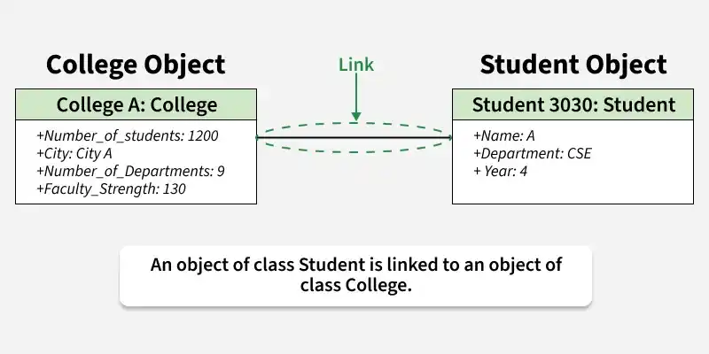
- Similar to a class diagram but shows specific instances of classes with actual attribute values.
- Class diagrams show general classifiers and relationships; object diagrams show instances at a point in time.
- A link is an instance of an association between two objects.
1.4 Component diagram
Component diagrams represent how physical components in a system have been organized. They model implementation details and structural relationships between software system elements.
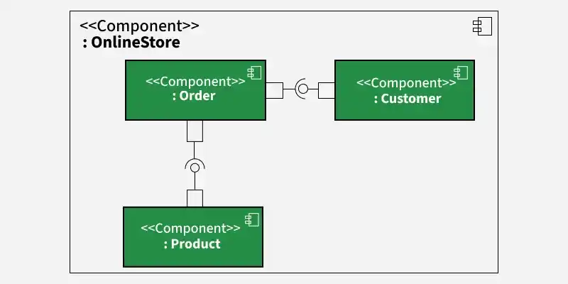
- Help verify that functional requirements have been covered by planned development.
- Essential for designing and building complex systems.
- Interfaces (lollipop and socket notation) are used by components to communicate with each other.
- Widely used in microservices architecture to represent service boundaries, APIs, and communication between services.
1.5 Deployment diagram
Deployment diagrams represent system hardware and its software — what hardware components exist and what software components run on them.
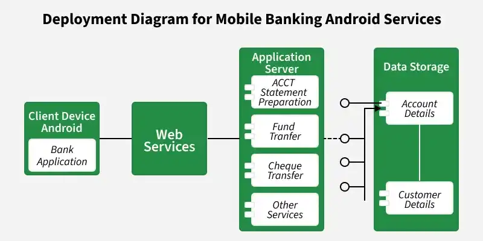
- Illustrate system architecture as distribution of software artifacts over distributed targets.
- An artifact is information generated by system software.
- Primarily used when software is used, distributed, or deployed over multiple machines with different configurations.
- Nodes represent hardware; artifacts/components represent deployed software.
1.6 Package diagram
- Depicts how packages and their elements have been organized.
- Shows dependencies between different packages and internal composition of packages.
- Packages help organize UML diagrams into meaningful groups and make diagrams easier to understand.
- Primarily used to organize class and use case diagrams in large systems — e.g., grouping web shopping use cases and classes into separate packages.
2. Behavioural UML diagrams
Behavioural UML diagrams depict the dynamic aspects of a system — how objects interact and behave over time in response to events.
2.1 State machine diagram
A state diagram represents the condition of the system or part of the system at finite instances of time. It models dynamic behaviour using finite state transitions.
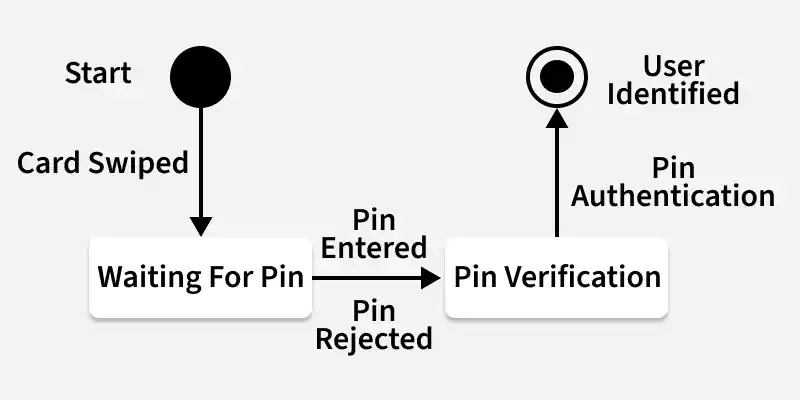
- Also referred to as state machines and state-chart diagrams — terms used interchangeably.
- Models the dynamic behaviour of a class in response to time and changing external stimuli.
- State: Rounded rectangle — a condition of an object at a point in time.
- Transition: Arrow with event label — change from one state to another.
- Initial state: Filled circle; final state: circle with inner dot.
2.2 Activity diagram
Activity diagrams illustrate the flow of control in a system. They can also represent the steps involved in executing a use case.
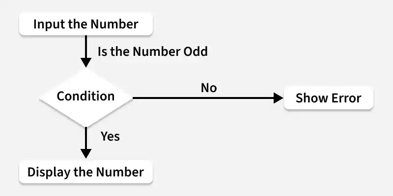
- Model sequential and concurrent activities — depict workflows visually.
- Focus on condition of flow and the sequence in which it happens.
- Describe what causes a particular event using decision nodes and guard conditions.
- Activity: Rounded rectangle; decision node: diamond; fork/join: bar for parallel activities.
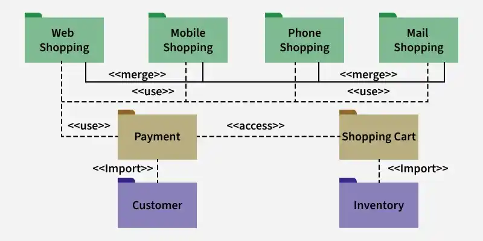
2.3 Use case diagram
Use case diagrams depict the functionality of a system or part of a system and its interaction with external agents (actors).
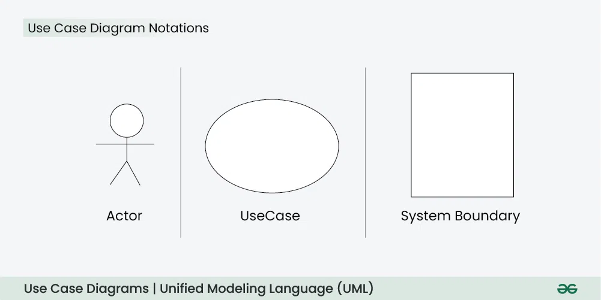
- A use case represents different scenarios where the system can be used.
- Provides a high-level view of what the system does without going into implementation details.
- Actor: User or external system (stick figure); use case: System function (oval).
- System boundary: Rectangle enclosing use cases; generalisation: Actor inheritance (e.g., Registered Customer is a Web Customer).
- Include/extend: Dashed arrows for reusable or optional use case behaviour.
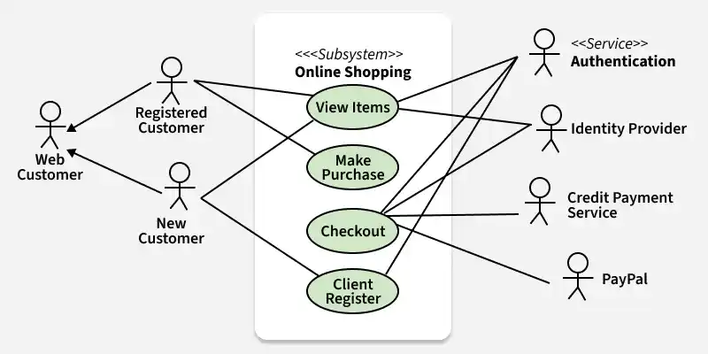
2.4 Sequence diagram
A sequence diagram depicts interaction between objects in a sequential order — the order in which interactions take place.
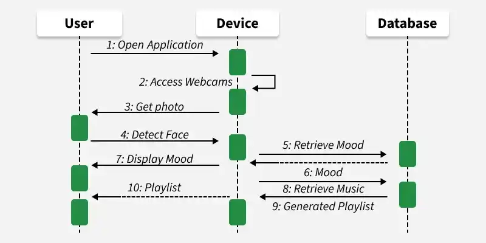
- Also called event diagrams or event scenarios.
- Describes how and in what order objects in a system function.
- Lifeline: Vertical dashed line below each object; activation bar: thin rectangle showing active processing.
- Message: Horizontal arrow — solid for synchronous, dashed for return/asynchronous.
- Widely used to document and understand requirements for new and existing systems.
2.5 Communication diagram
A communication diagram (known as collaboration diagram in UML 1.x) shows sequenced messages exchanged between objects, focusing primarily on objects and their relationships.
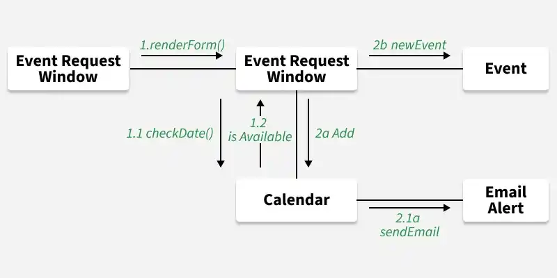
- Similar information to sequence diagrams but represents objects and links in a free-form layout.
- Messages are numbered to show sequence (e.g., 1, 1.1, 1.2, 2a, 2b).
- Emphasises structural relationships between objects rather than time ordering.
2.6 Interaction overview diagram
An interaction overview diagram illustrates the flow of interactions between elements in a system, providing a high-level overview of how interactions occur — including sequence of actions, decisions, and interactions between components.
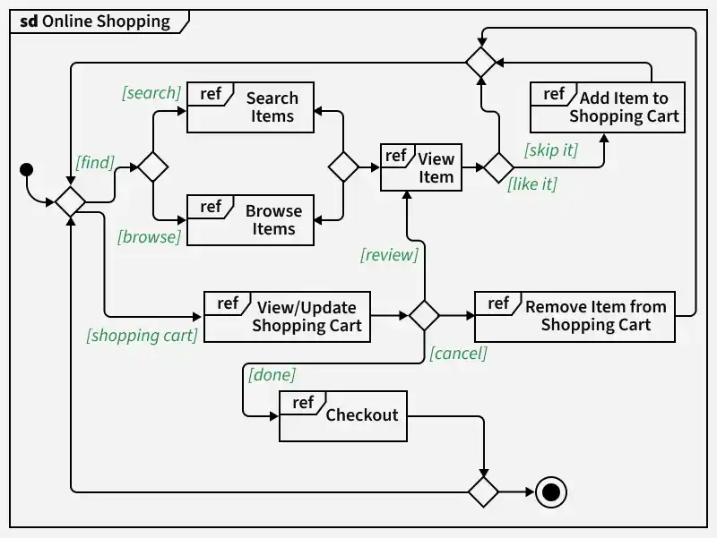
- Combines activity diagram notation with references to detailed interaction diagrams (ref boxes).
- Shows the "big picture" of complex logic by nesting detailed interactions within a high-level flow.
- Uses decision nodes with guard conditions (e.g., [search], [browse], [like it], [checkout]).
2.7 Timing diagram (UML 2.0 — exam awareness)
- Shows state changes of objects over time along a timeline axis.
- Added in UML 2.0; useful for real-time and embedded systems.
Additions in UML 2.0
- Software development methodologies like agile have been incorporated and the scope of the original UML specification has been broadened.
- Originally UML specified 9 diagrams. UML 2.x increased the number from 9 to 13.
- The four diagrams added in UML 2.x: timing diagram, communication diagram, interaction overview diagram, and composite structure diagram.
- UML 2.x renamed statechart diagrams to state machine diagrams.
- UML 2.x added the ability to decompose a software system into components and sub-components.
Tools for creating UML diagrams
- Lucidchart: Web-based diagramming tool; user-friendly and collaborative with real-time multi-user editing.
- Draw.io (diagrams.net): Free web-based tool supporting UML; integrates with cloud storage and works offline.
- Visual Paradigm: Comprehensive suite for software development with UML diagramming; online and desktop versions.
- StarUML: Open-source UML modeling tool with a user-friendly interface; supports UML 2.x and plugin extensions.
UML in the design process
- During high-level design, use case and class diagrams define scope and structure.
- During low-level design, sequence, activity, and state diagrams detail object interactions and workflows.
- Component and deployment diagrams model implementation and physical architecture.
- UML diagrams become part of the SDD and guide coding in OOP languages — see §5.5.
Q: What is UML? Classify UML diagrams. Explain key structural and behavioural diagrams with examples.
Model answer points:
- Define UML: visual language (not programming); ISO standard; blueprints for system design; linked to OOD.
- Need: stakeholder communication, visualize before coding, non-programmers understand requirements.
- Structural (6): class, composite structure, object, component, deployment, package.
- Behavioural (7): state machine, activity, use case, sequence, communication, interaction overview, timing.
- UML 2.0: 9 → 13 diagrams; added timing, communication, interaction overview, composite structure.
- Key examples: class (static structure), object (instances snapshot), component (OnlineStore), deployment (mobile banking), state (PIN auth), activity (odd number check), use case (online shopping), sequence (mood/music), communication (event request).
- Tools: Lucidchart, Draw.io, Visual Paradigm, StarUML.